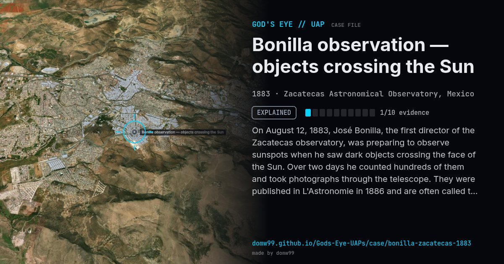

Bonilla observation — objects crossing the Sun
EXPLAINED

On August 12, 1883, José Bonilla, the first director of the Zacatecas observatory, was preparing to observe sunspots when he saw dark objects crossing the face of the Sun. Over two days he counted hundreds of them and took photographs through the telescope. They were published in L'Astronomie in 1886 and are often called the first photographs of unidentified flying objects.
Explanation
Camille Flammarion thought Bonilla had seen birds, insects or dust close to the telescope. A 2011 study at UNAM proposed fragments of a comet passing close to Earth. Either way, nothing suggests craft.
What was seen
Shape: Hundreds of dark, fuzzy bodies with tails
Witnesses: 1 astronomer (José Bonilla)
Duration: About 2 days